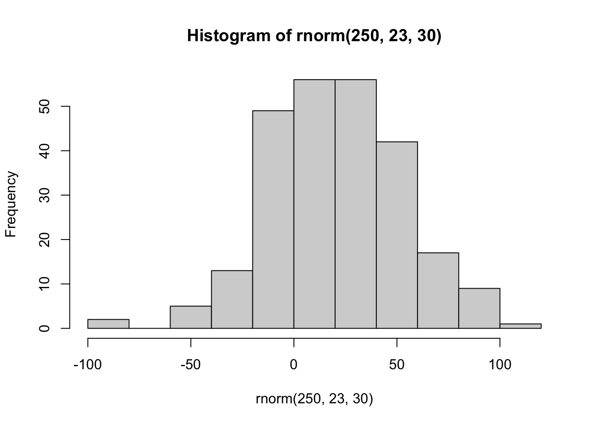
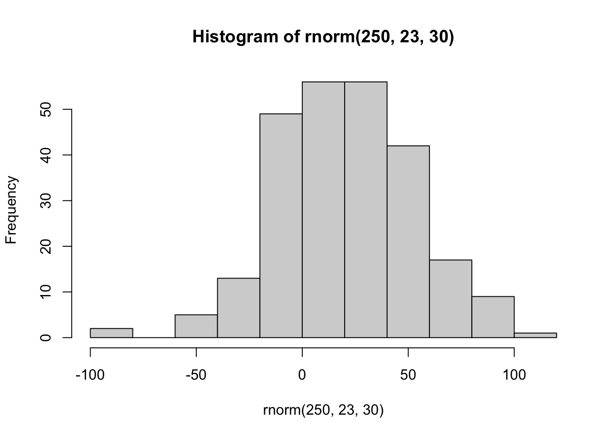
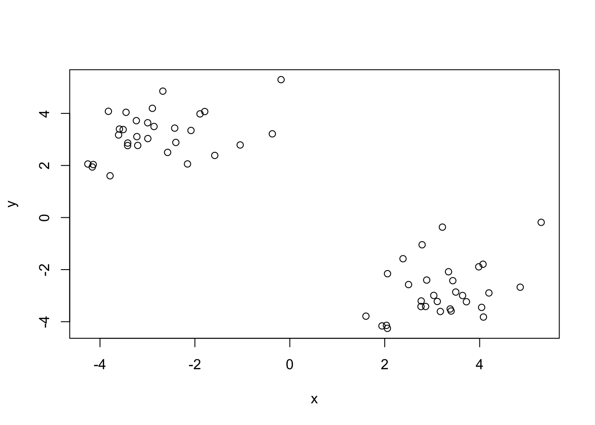
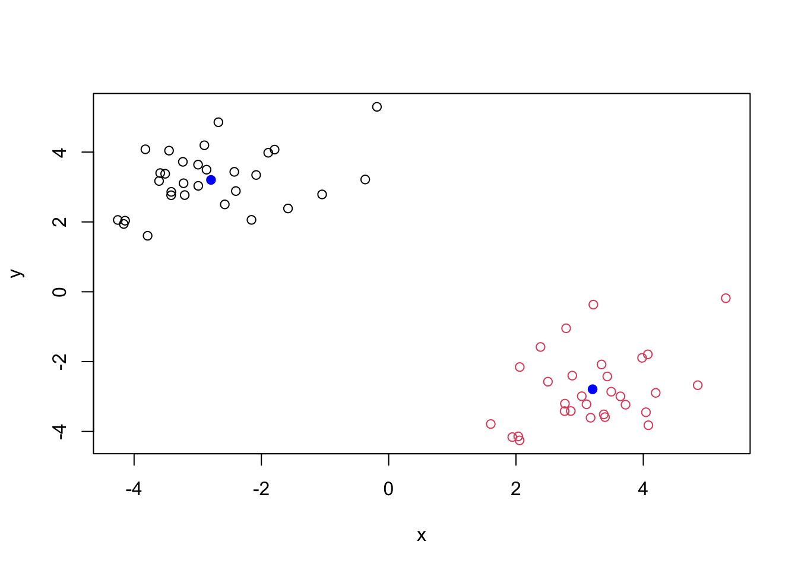
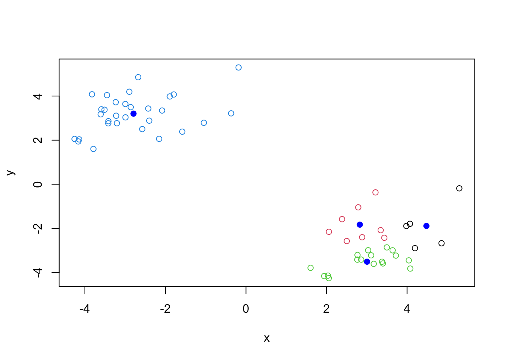
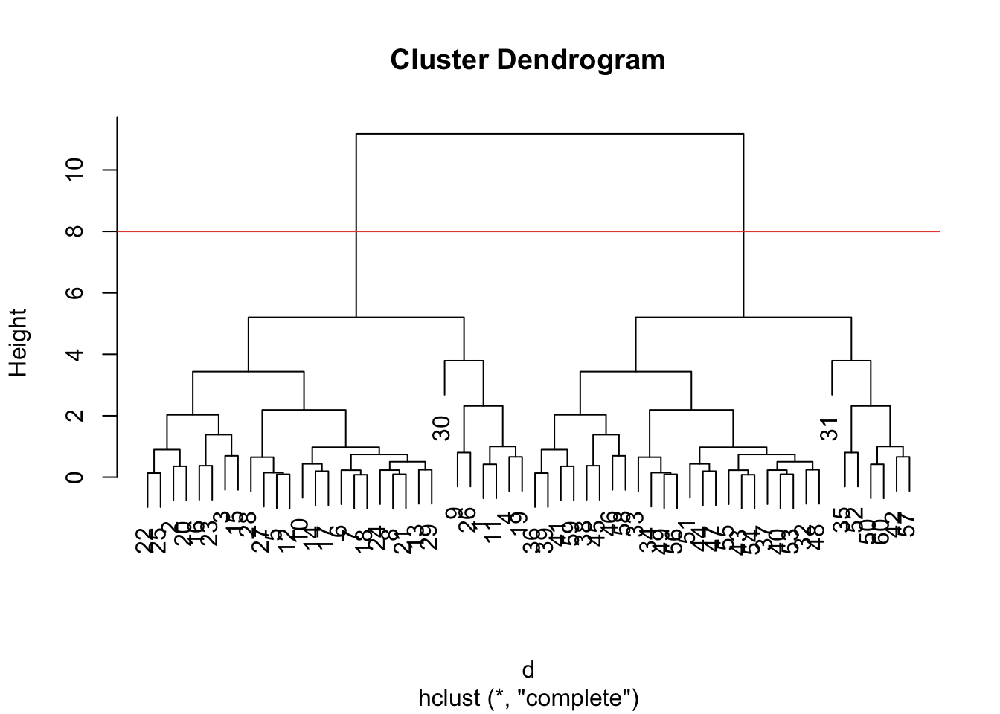
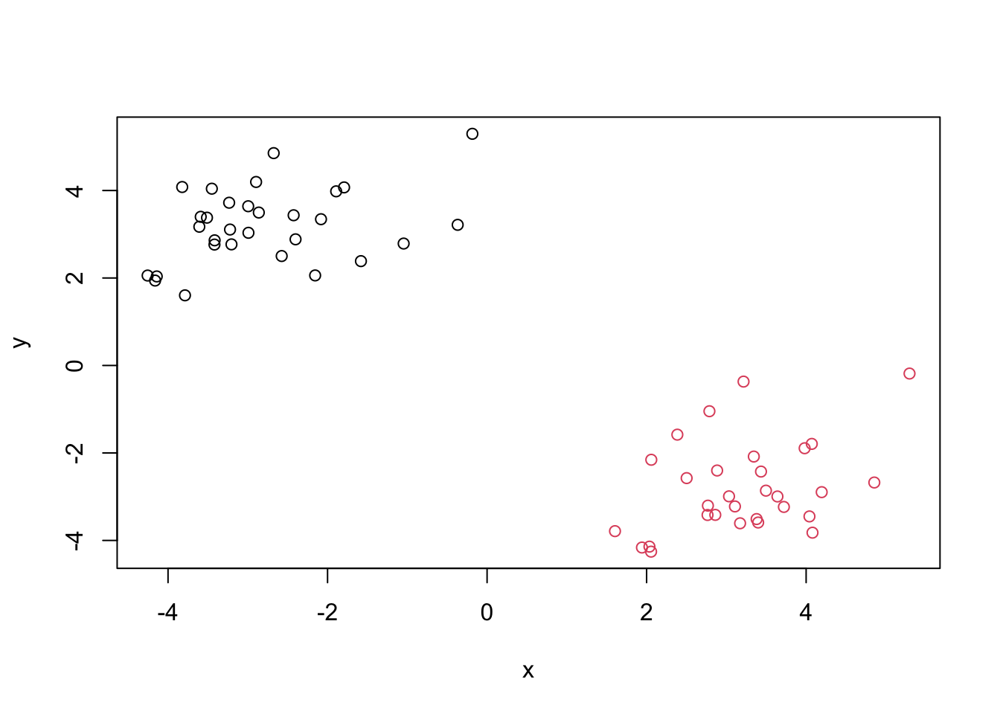
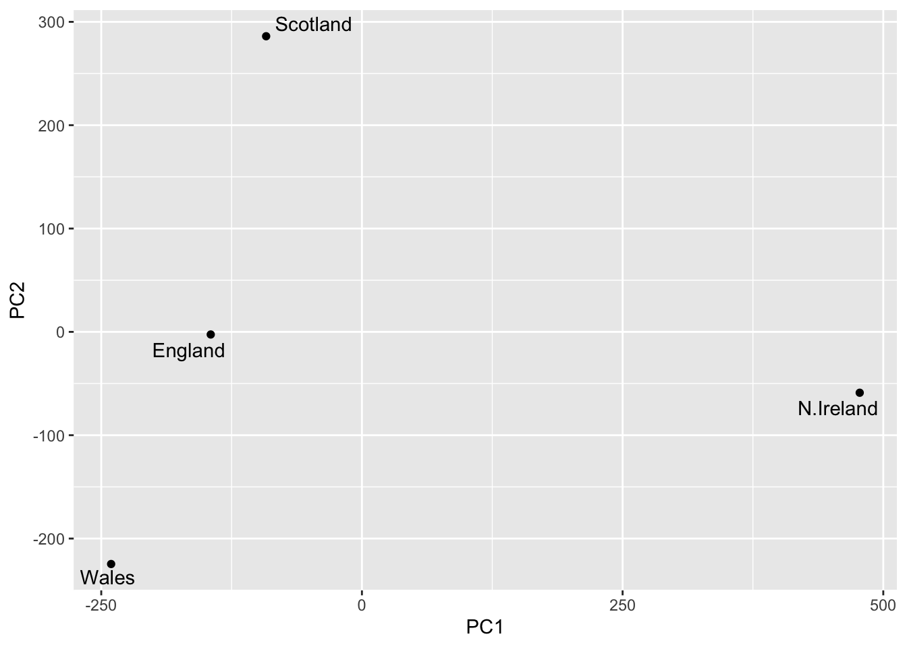

hist(rnorm(250, 23, 30))
Today, we are exploring unsupervised machine learning starting with clustering and dimentionality reduction!
Let’s make a data where we know what the answer should be, just to get used to the function and see if it works! The rnorm() function will help us.
hist(rnorm(250, 23, 30))
Return 30 numbers centered at -3
c(rnorm(30, -3), rnorm(30, 3)) [1] -2.689973 -2.800766 -4.001226 -4.848236 -3.355128 -1.762774 -3.059007
[8] -2.428196 -2.555481 -2.475957 -3.010866 -1.741970 -3.435163 -4.520388
[15] -2.965377 -2.639855 -2.539187 -4.207823 -3.783412 -2.638145 -2.667210
[22] -2.955314 -4.183197 -2.833517 -1.768948 -4.087965 -4.224046 -1.856324
[29] -4.851226 -4.310802 4.005449 5.332193 5.290003 3.789611 2.729008
[36] 2.115748 2.861522 4.256310 2.489318 3.832606 1.995276 3.862514
[43] 2.531637 2.248586 4.237619 2.557924 2.979442 2.733186 2.501031
[50] 3.784336 3.231961 4.419357 3.198932 1.921969 1.194655 2.972059
[57] 2.257618 3.980693 2.714357 3.996223#same as:
tmp <- tmp <- c(rnorm(30,-3), rnorm(30,3))
x <- cbind(x=tmp, y=rev(tmp))Now, make this into a Plot:
plot(x)
Main functuion in “base R” for K-mean clustering is called kmeans()
km <- kmeans(x, centers=2) #centers refers to how many groups we want it to give us.
#clustering vector is which cluster each of the points are at (i.e., cluster 1 or 2).
kmK-means clustering with 2 clusters of sizes 30, 30
Cluster means:
x y
1 -2.791632 3.203724
2 3.203724 -2.791632
Clustering vector:
[1] 1 1 1 1 1 1 1 1 1 1 1 1 1 1 1 1 1 1 1 1 1 1 1 1 1 1 1 1 1 1 2 2 2 2 2 2 2 2
[39] 2 2 2 2 2 2 2 2 2 2 2 2 2 2 2 2 2 2 2 2 2 2
Within cluster sum of squares by cluster:
[1] 53.55184 53.55184
(between_SS / total_SS = 91.0 %)
Available components:
[1] "cluster" "centers" "totss" "withinss" "tot.withinss"
[6] "betweenss" "size" "iter" "ifault" The kmeans() function returns a list of 9 components. We can see the attributes from attributes() function!
#Look at the attributes of the Km:
attributes(km)$names
[1] "cluster" "centers" "totss" "withinss" "tot.withinss"
[6] "betweenss" "size" "iter" "ifault"
$class
[1] "kmeans"Q1. How many points are in each cluster?
km$size[1] 30 30Q2. Cluster assignment/mamber vector?
km$cluster [1] 1 1 1 1 1 1 1 1 1 1 1 1 1 1 1 1 1 1 1 1 1 1 1 1 1 1 1 1 1 1 2 2 2 2 2 2 2 2
[39] 2 2 2 2 2 2 2 2 2 2 2 2 2 2 2 2 2 2 2 2 2 2#cluster: It's telling us which pints belong to which clusters.Q3. Cluster Centers?
km$centers x y
1 -2.791632 3.203724
2 3.203724 -2.791632Q4. Make a plot of our
kmeans()results, with cluster assignment different colors, and centers blue.
plot(x, col=km$cluster) + points(km$centers, col="blue", pch=19) 
integer(0)Q5. Run
k-meansagain onx, but with 4 groups cluster, and plot the same result fig as above.
km4 <- kmeans(x, centers= 4)
km4K-means clustering with 4 clusters of sizes 5, 8, 17, 30
Cluster means:
x y
1 4.479765 -1.888133
2 2.826453 -1.829453
3 3.005957 -3.510157
4 -2.791632 3.203724
Clustering vector:
[1] 4 4 4 4 4 4 4 4 4 4 4 4 4 4 4 4 4 4 4 4 4 4 4 4 4 4 4 4 4 4 1 3 3 3 2 1 3 3
[39] 1 3 2 2 3 3 3 1 3 3 3 2 3 2 3 3 3 3 2 1 2 2
Within cluster sum of squares by cluster:
[1] 5.850933 5.901369 11.589978 53.551841
(between_SS / total_SS = 93.5 %)
Available components:
[1] "cluster" "centers" "totss" "withinss" "tot.withinss"
[6] "betweenss" "size" "iter" "ifault" #Plotting km4
plot(x, col= km4$cluster) + points(km4$centers, col="blue", pch=19)
integer(0)Key point - BE WARY:
Kmeans is super popular because it’s easy to understand, but it can be self-fulfilling and MISUSED. One big limitation is: it can impose a clustering pattern even if natural grouping doesn’t exist.
We can just cluster anything into what we think it is, when we determine thecenters. Say, even though it’s only 2 clusters, we put in 4 and it still gives out a result.
Main function in base R is hclust().
You can’t just pass the dataset as is into hclust(). We have to make a distance matrix (dissimilarity distance) first. But this makes it more flexible (doesn’t have to be Euclidean distances only like the kmeans()). Flexible as in we can do sequence alignments too!
d <- dist(x)
hc <- hclust(d)
hc #not very useful without plotting it.
Call:
hclust(d = d)
Cluster method : complete
Distance : euclidean
Number of objects: 60 The results of hclust() doesn’t have very useful print method, but it has special plot() method. Will give out a “dendrogram” or a “tree diagram”.
plot(hc) + #each labels here #each labels here is just the data label.
abline(h=8, col = "#E74C3C")
integer(0)hclust() is a bottom-up clustering method.
To get our main cluster assignment (membership vector), we need to cut our tree.
groups <- cutree(hc, h=8)
groups [1] 1 1 1 1 1 1 1 1 1 1 1 1 1 1 1 1 1 1 1 1 1 1 1 1 1 1 1 1 1 1 2 2 2 2 2 2 2 2
[39] 2 2 2 2 2 2 2 2 2 2 2 2 2 2 2 2 2 2 2 2 2 2We can see the attributes of groups by using table()
table(groups)groups
1 2
30 30 Plotting the same one (Q4) where we determine the colors of the clusters:
plot(x, col= groups)
Hierarchical clusterng is distinct, in that the dendogram (tree figure) can reveal the potential groupings in our data, unlike K-means.
PC is a common and useful dimentionality reduction technique used in many fields, particularly Bioinformatics. It basically lines that are of best fit for our data. So these PC lines are better at representind the data points compared to any of the original axes.
PC’s capture the “spread” of the data. The PC1 axis will capture the most variation, followed by the PC2, etc.
Objectives of PC:
Basically like a filter!
Importing the File:
url <- "https://tinyurl.com/UK-foods"
uk <- read.csv(url, row.names = 1) #this row.names is a function that sets the first column into row names.
head(uk, 6) England Wales Scotland N.Ireland
Cheese 105 103 103 66
Carcass_meat 245 227 242 267
Other_meat 685 803 750 586
Fish 147 160 122 93
Fats_and_oils 193 235 184 209
Sugars 156 175 147 139Now, let’s try plotting them.
Barplot
barplot(as.matrix(uk), beside=T, col=rainbow(nrow(uk)))
Stacked barplot
barplot(as.matrix(uk), beside=F, col=rainbow(nrow(uk)))
Pairs Plot
Now a more useful plot!
pairs(uk, col=rainbow(10), pch=16)
The main function in R for PCA: prcomp()
t(uk) #transposing the data, so we have the columns as the food type. Cheese Carcass_meat Other_meat Fish Fats_and_oils Sugars
England 105 245 685 147 193 156
Wales 103 227 803 160 235 175
Scotland 103 242 750 122 184 147
N.Ireland 66 267 586 93 209 139
Fresh_potatoes Fresh_Veg Other_Veg Processed_potatoes
England 720 253 488 198
Wales 874 265 570 203
Scotland 566 171 418 220
N.Ireland 1033 143 355 187
Processed_Veg Fresh_fruit Cereals Beverages Soft_drinks
England 360 1102 1472 57 1374
Wales 365 1137 1582 73 1256
Scotland 337 957 1462 53 1572
N.Ireland 334 674 1494 47 1506
Alcoholic_drinks Confectionery
England 375 54
Wales 475 64
Scotland 458 62
N.Ireland 135 41pca <- prcomp(t(uk))
summary(pca)Importance of components:
PC1 PC2 PC3 PC4
Standard deviation 324.1502 212.7478 73.87622 3.176e-14
Proportion of Variance 0.6744 0.2905 0.03503 0.000e+00
Cumulative Proportion 0.6744 0.9650 1.00000 1.000e+00PC1 is the one that will catch most variation. This makes sense, since 67% of Proportion of Variance is captured by PC1, and 29% is captured by the PC2.
The prcomp() function returns a list of object of our results with 5 attributes/components.
attributes (pca)$names
[1] "sdev" "rotation" "center" "scale" "x"
$class
[1] "prcomp"head(pca$x) PC1 PC2 PC3 PC4
England -144.99315 -2.532999 105.768945 -4.894696e-14
Wales -240.52915 -224.646925 -56.475555 5.700024e-13
Scotland -91.86934 286.081786 -44.415495 -7.460785e-13
N.Ireland 477.39164 -58.901862 -4.877895 2.321303e-13The two main results in here are: pca$x and pca$rotation. The pca$x contains scores of fata on the new PC axis – we use these to make the “PCA plot”
library(ggplot2)
library(ggrepel)
#make a plot of pca$x of PC1 v PC2
ggplot(pca$x)+
aes (PC1, PC2, label= rownames(pca$x))+
geom_point()+
geom_text_repel()
This plot mainly shows that Ireland consumes quite different foods than England, Wales, and Scotland. The PC1 shows highest variation, while the PC2 shows the second highest.
The second major result is contained in the pca$rotation object or component. Let’s plot to see what PCA is picking up.
head(pca$rotation) PC1 PC2 PC3 PC4
Cheese -0.056955380 0.01601285 0.02394295 -0.694538519
Carcass_meat 0.047927628 0.01391582 0.06367111 0.489884628
Other_meat -0.258916658 -0.01533114 -0.55384854 0.279023718
Fish -0.084414983 -0.05075495 0.03906481 -0.008483145
Fats_and_oils -0.005193623 -0.09538866 -0.12522257 0.076097502
Sugars -0.037620983 -0.04302170 -0.03605745 0.034101334Each factor (the food) contribution to the PC1 (the new axis!):
ggplot(pca$rotation)+
aes(PC1, rownames(pca$rotation))+
geom_col()
This second plot shows how much each of the food types contribute to the PC; how much they affect the variance!
UNDERSTANDING THE TWO PLOTS:
Combined with the previous plot (L: Ireland, R: England, Wales, and Scots), the two shows that Ireland eats more fresh potatoes and soft drinks, but the Fresh fruit adn alcoholic drinks are less consumed there.